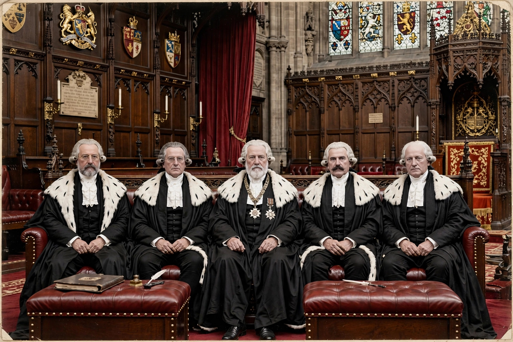

Lords of Appeal in Ordinary, commonly called Law Lords, were judges appointed under the Appellate Jurisdiction Act 1876 to exercise the judicial functions of the House of Lords. They received life peerages and sat as the United Kingdom's highest court until 2009.

Before 1876 the whole House of Lords theoretically heard appeals, in practice lay peers abstained. The Act professionalised the role. The senior Law Lord headed the Appellate Committee.
Under the Constitutional Reform Act 2005, the serving Law Lords became the first Justices of the Supreme Court of the United Kingdom in 2009 and were disqualified from sitting in the Lords while in office.